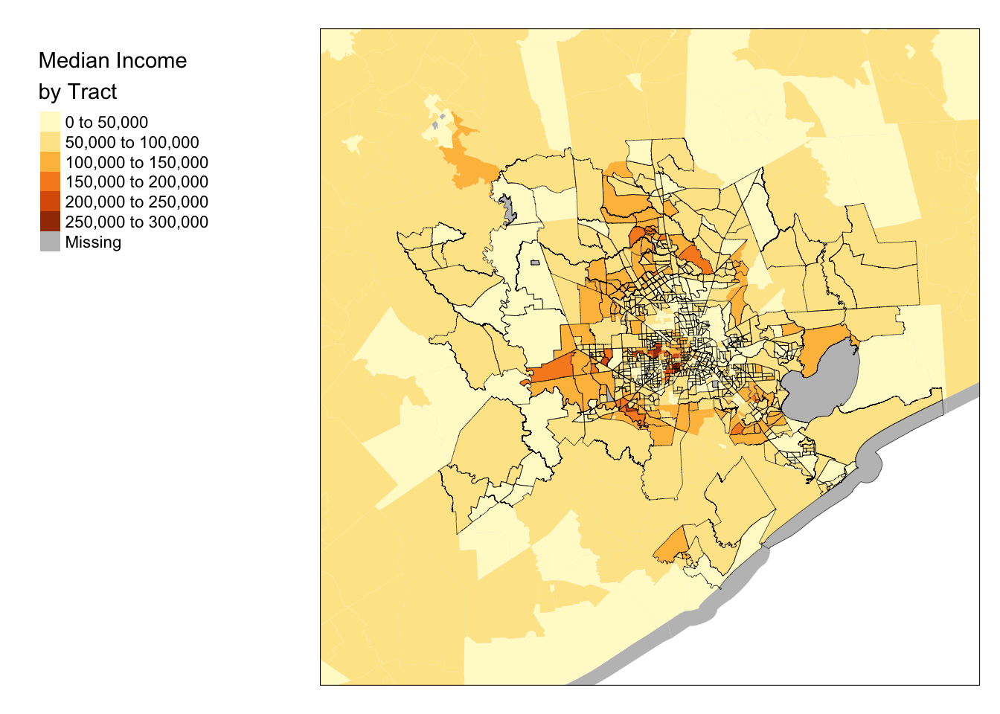
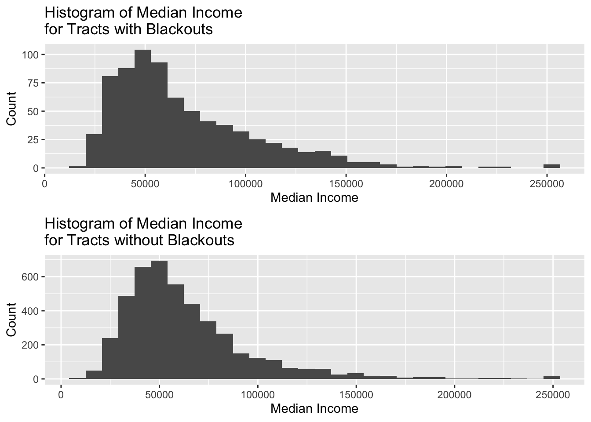

# Reading in Houston tiles
v5_before <- read_stars("data/VNP46A1/VNP46A1.A2021038.h08v05.001.2021039064328.tif")
v6_before <- read_stars("data/VNP46A1/VNP46A1.A2021038.h08v06.001.2021039064329.tif")
v5_after <- read_stars("data/VNP46A1/VNP46A1.A2021047.h08v05.001.2021048091106.tif")
v6_after <- read_stars("data/VNP46A1/VNP46A1.A2021047.h08v06.001.2021048091105.tif")
# Joining Houston tiles
joined_before <- st_mosaic(v5_before, v6_before)
joined_after <- st_mosaic(v5_after, v6_after)In this blog post, I will be analyzing the major power crisis that occurred in Texas on February, 2021 when significant winter storms hit the US.
# Difference in light between the two days
joined <- joined_after - joined_before
# Only locations with a drop of more than 200 nW cm-2sr-1
blackout <- joined > 200
# Assigning all values below 200 to NA
joined[joined < 200] <- NA
# Making joined map of houston blackout into an sf object
vectorized <- st_as_sf(joined)
# If any invalid geometries, makes them valid
vec_map <- st_make_valid(vectorized)# 5 points to close the geometry
coords <- list(rbind(c(-96.5, 29), c(-96.5, 30.5), c(-94.5, 30.5), c(-94.5, 29), c(-96.5, 29)))
# Making points into a polygon
box <- st_polygon(coords)
# Making into sf collection
box <- st_sfc(box, crs = "EPSG:4326")
class(box)[1] "sfc_POLYGON" "sfc" # Cropping houston blackout map to 'box' coordinates
roi <- st_crop(vec_map, box)Warning: attribute variables are assumed to be spatially constant throughout all
geometriesboxGeometry set for 1 feature
Geometry type: POLYGON
Dimension: XY
Bounding box: xmin: -96.5 ymin: 29 xmax: -94.5 ymax: 30.5
Geodetic CRS: WGS 84POLYGON ((-96.5 29, -96.5 30.5, -94.5 30.5, -94...# Transforming crs back to NAD83
houst_roi <- st_transform(roi, crs = "EPSG:3083")# Define query
query <- "SELECT * FROM gis_osm_roads_free_1 WHERE fclass='motorway'"
# Read in freeways with query
highways <- st_read("data/gis_osm_roads_free_1.gpkg", query = query)Reading query `SELECT * FROM gis_osm_roads_free_1 WHERE fclass='motorway'' from data source `/Users/wsedgwick/Desktop/bren_meds/BREN MEDS/wsedgwick.github.io/posts/2022-12-06-eds223-final/data/gis_osm_roads_free_1.gpkg'
using driver `GPKG'
Simple feature collection with 6085 features and 10 fields
Geometry type: LINESTRING
Dimension: XY
Bounding box: xmin: -96.50429 ymin: 29.00174 xmax: -94.39619 ymax: 30.50886
Geodetic CRS: WGS 84# Changing crs to NAD83, buffer of 200 meters, union gets rid of boundaries
highways <- highways %>%
st_transform("EPSG:3083") %>%
st_buffer(200) %>%
st_union()
# Filter blackout areas in Houston to areas farther than 200 meters from highways
bo_far_from_road <- houst_roi[highways, op = st_disjoint]
# Define query
query1 <- "SELECT * FROM gis_osm_buildings_a_free_1 WHERE (type IS NULL AND name IS NULL)"
# Load in buildings dataset with SQL query
buildings <- st_read("data/gis_osm_buildings_a_free_1.gpkg", query = query1)Reading query `SELECT * FROM gis_osm_buildings_a_free_1 WHERE (type IS NULL AND name IS NULL)' from data source `/Users/wsedgwick/Desktop/bren_meds/BREN MEDS/wsedgwick.github.io/posts/2022-12-06-eds223-final/data/gis_osm_buildings_a_free_1.gpkg'
using driver `GPKG'
Simple feature collection with 413297 features and 5 fields
Geometry type: MULTIPOLYGON
Dimension: XY
Bounding box: xmin: -96.50055 ymin: 29.00344 xmax: -94.53285 ymax: 30.50393
Geodetic CRS: WGS 84# Change crs to NAD83
buildings <- st_transform(buildings, crs = "EPSG:3083")# filtering houston blackout areas by buildings
bo_homes <- houst_roi[buildings, ]
# Variable with number of buildings with blackouts
impacted_homes_count <- nrow(bo_homes)
# Printing impacted homes
paste0("There are ", impacted_homes_count, " impacted homes in the city of Houston.")[1] "There are 3523 impacted homes in the city of Houston."# Loading geometries
geoms <- st_read("data/ACS_2019_5YR_TRACT_48_TEXAS.gdb", layer = "ACS_2019_5YR_TRACT_48_TEXAS")Reading layer `ACS_2019_5YR_TRACT_48_TEXAS' from data source
`/Users/wsedgwick/Desktop/bren_meds/BREN MEDS/wsedgwick.github.io/posts/2022-12-06-eds223-final/data/ACS_2019_5YR_TRACT_48_TEXAS.gdb'
using driver `OpenFileGDB'
Simple feature collection with 5265 features and 15 fields
Geometry type: MULTIPOLYGON
Dimension: XY
Bounding box: xmin: -106.6456 ymin: 25.83716 xmax: -93.50804 ymax: 36.5007
Geodetic CRS: NAD83# Loading income data
income <- st_read("data/ACS_2019_5YR_TRACT_48_TEXAS.gdb", layer = "X19_INCOME")Reading layer `X19_INCOME' from data source
`/Users/wsedgwick/Desktop/bren_meds/BREN MEDS/wsedgwick.github.io/posts/2022-12-06-eds223-final/data/ACS_2019_5YR_TRACT_48_TEXAS.gdb'
using driver `OpenFileGDB'Warning: no simple feature geometries present: returning a data.frame or tbl_df# Selecting median income data and renaming
income_median <- income %>%
dplyr::select("GEOID", "B19013e1") %>%
rename(GEOID_Data = "GEOID", median_income = "B19013e1")census_tracts <- st_transform(geoms, crs = "EPSG:4326")
houst_roi <- st_transform(houst_roi, crs = "EPSG:4326")
# Joining census tract and madian income data
income_median_sf <- full_join(census_tracts, income_median, by = "GEOID_Data")
# Changing crs
income_median_sf <- income_median_sf %>%
st_transform(crs = "EPSG:3083")
# Census tracts that had blackouts
buildings_bo_census <- income_median_sf[bo_homes, ]# Changing crses
box_nad <- st_transform(box, crs = "EPSG:3083")
geoms_nad <- st_transform(geoms, crs = "EPSG:3083")
# Filtering geometries by box coordinates
census_tracts_all <- geoms_nad[box_nad, ]
# Plotting Median Income in Houston area, with impacted tracts having black borders
tm_shape(census_tracts_all) +
tm_borders(col = "grey", alpha = 0.2) +
tm_shape(income_median_sf) +
tm_fill(col = "median_income", title = "Median Income\nby Tract") +
tm_layout(legend.outside = TRUE,
legend.outside.position = c("left", "bottom")) +
tm_shape(buildings_bo_census) +
tm_borders(col = "black", lwd = 0.3)
# Average median income for impacted buildings, not included in graph
avg_med_income_bo <- mean(buildings_bo_census$median_income, na.rm = TRUE)
# Histogram of median income distribution for tracts with blackouts
hist1 <- ggplot(data = buildings_bo_census, aes(x = median_income)) +
geom_histogram() +
labs(title = "Histogram of Median Income\nfor Tracts with Blackouts",
x = "Median Income",
y = "Count")
# Dropping geoms of tracts with blackout buildings to get tracts without blackouts
buildings_bo_census_dropped <- st_drop_geometry(buildings_bo_census)
no_blackout_tracts <- anti_join(income_median_sf, buildings_bo_census_dropped)Joining, by = c("STATEFP", "COUNTYFP", "TRACTCE", "GEOID", "NAME", "NAMELSAD",
"MTFCC", "FUNCSTAT", "ALAND", "AWATER", "INTPTLAT", "INTPTLON", "Shape_Length",
"Shape_Area", "GEOID_Data", "median_income")# Average median income for nonimpacted buildings, not included in graph
avg_med_income_no_bo <- mean(no_blackout_tracts$median_income, na.rm = TRUE)
# Histogram of median income distribution for tracts without blackouts
hist2 <- ggplot(data = no_blackout_tracts, aes(x = median_income)) +
geom_histogram() +
labs(title = "Histogram of Median Income\nfor Tracts without Blackouts",
x = "Median Income",
y = "Count")
# Combining histograms for comparison
ggarrange(hist1, hist2, nrow = 2)`stat_bin()` using `bins = 30`. Pick better value with `binwidth`.Warning: Removed 9 rows containing non-finite values (stat_bin).`stat_bin()` using `bins = 30`. Pick better value with `binwidth`.Warning: Removed 54 rows containing non-finite values (stat_bin).
Citation
BibTeX citation:
@online{sedgwick2022,
author = {Wade Sedgwick},
title = {Geospatial {Analysis} {Final} {Blog} {Post}},
date = {12/06/2022},
url = {https://wsedgwick.github.io/posts/2022-10-24-quarto-blogs/},
langid = {en}
}
For attribution, please cite this work as:
Wade Sedgwick. 12AD–6AD. “Geospatial Analysis Final Blog
Post.” 12AD–6AD. https://wsedgwick.github.io/posts/2022-10-24-quarto-blogs/.